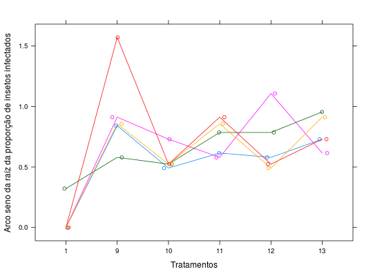

Dados do ensaio 2 de um experimento em DBC que estudou a patogenicidade de fungos as percevejo do grão de arroz. A testemunha sem infecção (1) era o tratamento comum entre os dois experimentos. Os dados se referem à proporção de percevejos infectados, transformada pelo arco seno da raiz quadrada da proporção.
Um data.frame com 35 observações e 3 variáveis, em que
tratblocoasinpropZIMMERMANN (2004), pág. 255.
library(lattice) data(ZimmermannTb12.14)#> Warning: data set ‘ZimmermannTb12.14’ not foundstr(ZimmermannTb12.14)#> 'data.frame': 30 obs. of 3 variables: #> $ trat : Factor w/ 6 levels "1","9","10","11",..: 1 2 3 4 5 6 1 2 3 4 ... #> $ bloco : Factor w/ 5 levels "1","2","3","4",..: 1 1 1 1 1 1 2 2 2 2 ... #> $ asinprop: num 0 0.841 0.491 0.616 0.58 ...xyplot(asinprop ~ trat , groups = bloco, data = ZimmermannTb12.14, type = c("p", "a"), jitter.x = TRUE, xlab = "Tratamentos", ylab = "Arco seno da raíz da proporção de insetos infectados")aggregate(asinprop ~ trat, data = ZimmermannTb12.14, FUN = function(x) { c(mean = mean(x), var = var(x)) })#> trat asinprop.mean asinprop.var #> 1 1 0.064360000 0.020711048 #> 2 9 0.952060000 0.136131023 #> 3 10 0.558280000 0.009383247 #> 4 11 0.749860000 0.021499193 #> 5 12 0.697340000 0.065601388 #> 6 13 0.788380000 0.019961072